📌 Analiza teksta
📌 Sentiment analysis
Instalacija
Za rad s tekstom potrebno je instalirati dodatak (Options - Install Add-on) za tekst:
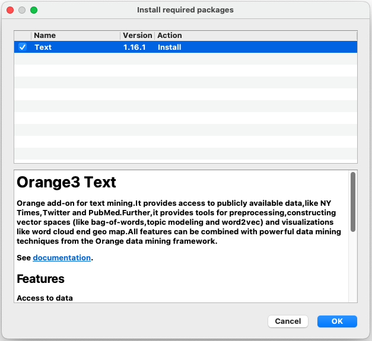
Dodatak nam omogućuje pristup javno dostupnim skupovima podataka, ali također i rad s našim podacima.
Učitavanje podataka
Podatke možemo učitati pomoću novog widget-a koji se instalirao u Text Mining alatnoj traci: Import Documents.
Desni klik mišem vam uvijek može dati dodatne informacije o nekom widgetu:
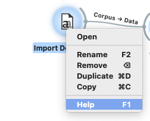
Widget Import Documents omogućuje učitavanje dokumenata iz foldera.
Izlaz widget-a je:
- Corpus: Kolekcija dokumenata
- Skipped documents: dokumenti koji se nisu mogli učitati.
Widget može pročitati: .txt, .docx, .odt, .pdf, .xml, and .conllu datoteke. Ako folder sadrži podfoldere, onda će se nazivi koristiti kao kategorije ili oznake klasa (kao i sa slikama).
Možemo učitati alice.txt (preuzmite sa stranice kolegija i spremite u poseban folder).
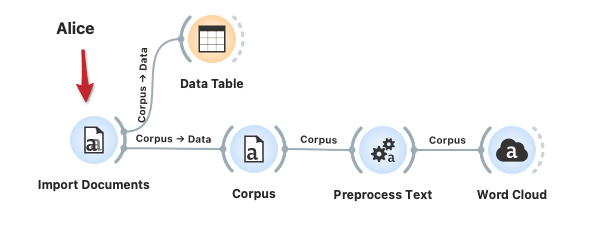
Svaki dokument koji se učita ima sljedeće podatke koje vidimo u Data Table:
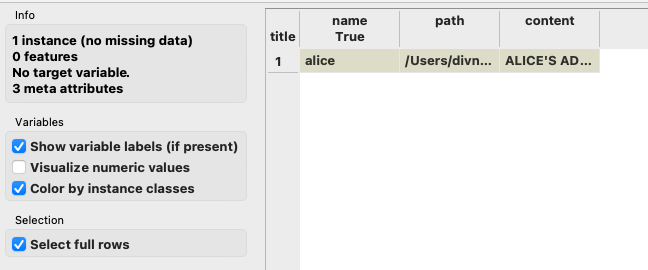
Obzirom da je izlaz corpus, onda ćemo ga spojiti na istoimeni widget.
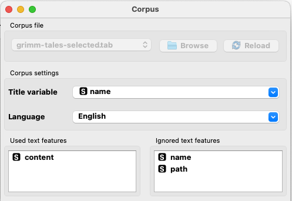
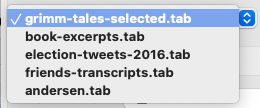
Corpus učitava tekstualne dokumente. Može raditi na dva načina:
- Ako nema podataka na ulazu, onda omogućuje učitavanje teksta iz datoteka (corpus file) ili iz postojećih primjera (npr. bajke)
- Ako postoji ulaz, onda pretvara podatke u corpus. Pri tome korisnici mogu birati koje značajke (eng. features) žele koristiti.
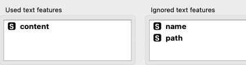
Widget Preprocess Text obavlja obradu teksta. Ulaz mora biti tipa corpus, a izlaz je "obrađeni" corpus. Obrada podrazumijeva rastavljanje teksta na manje jedinice tokens, filtriranje, normalizacija, stvaranje n-grama, ...
Dostupni alati:
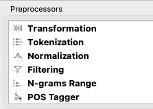
- Transformation - pretvara ulazne podatke (npr. Sva slova u mala), uklanja naglaske (oznake iznad slova, kôd ⇒ kod), parsira HTML (ignorira tag-ove te uzima samo stvarni tekst), uklanja URL-ove.
- Tokenization - metoda rastavljanja teksta na manje jedinice (riječi), možemo odabrati način (po razmacima, sa/bez zadržavanja znakova interpunkcije i sl.).
- Normalization - obavlja stemming i lemmatization. To su dvije tehnike obrade prirodnog jezika (NLP) koje prevode riječi u njihove osnovne oblike (korijenske). Pri tome stemming uklanja nastavke (cats ⇒ cat, loved ⇒ love). Lemmatization je precizniji postupak od prethodnog jer koristi morfološke oblike riječi (npr. better ⇒ good).
- Filtering - uklanja ili zadržava skup riječi, kao što su stopwords (npr. and, or, a, in, ... u engleskom jeziku).
- ...
Ostalo pogledajte na stranici: (https://orangedatamining.com/widget-catalog/text-mining/preprocesstext/ ).
Nakon što smo rastavili tekst na riječi i uklonili "stop words", rezultat možemo jednostavno vizualizirati pomoću Word Cloud widget-a:
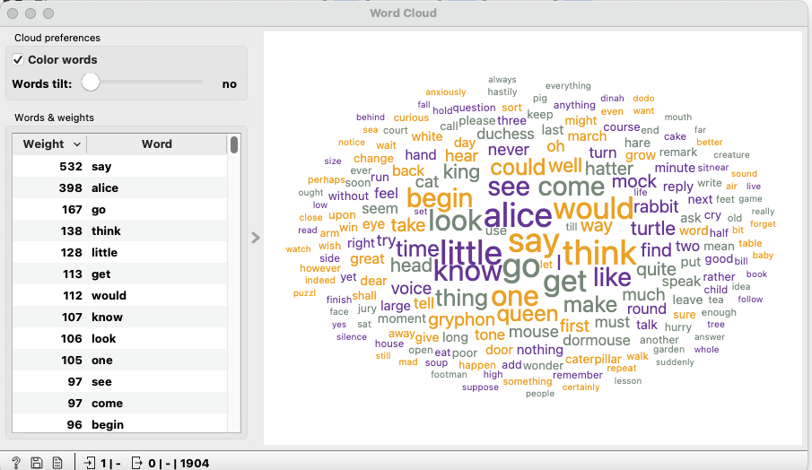
Ako pogledate pomoć za Word Cloud, vidjet ćete kako postoji više vrsta izlaza te da nije samo za vizualizaciju:
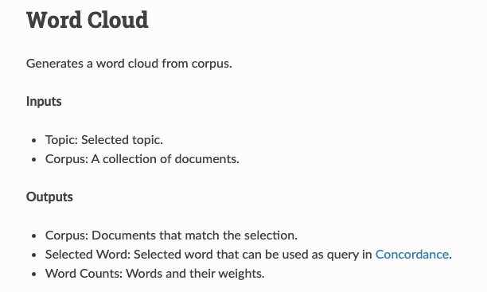
Prema tome, možemo napraviti i stupčasti grafikon za prikaz najčešćih riječi (pazimo na postavke kanala):
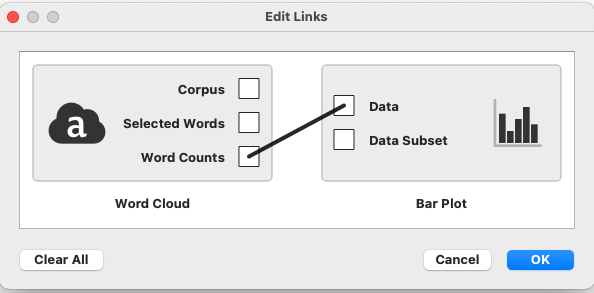
Rezultat (odabran samo dio za prikaz):

Sentiment analysis (SA) (okvirni prijevod: "analiza sentimenta") je područje obrade prirodnog jezika (NLP) koja se koristi za određivanje emocionalnog tona izraženog u tekstu, odnosno pokušava se utvrditi je li tekst pozitivan, negativan ili neutralan. Ponekad se naziva "opinion mining".
Primjena:
- Marketing - praćenje mišljenja kupaca o proizvodima i uslugama
- Društvene mreže - praćenje javnog mišljenja o temama ili događajima
- Politika - praćenje mišljenja o političarima
- ...
Pristup SA možemo podijeliti na:
- SA temeljena na pravilima (eng. rule-based)
- SA temeljena na strojnom učenju (naive bayes, logistička regresija, SVM)
- Hibridni pristup
Nedostaci SA:
- Nedostatak konteksta - posebno kad se radi o malom bloku teksta
- Ironija ili sarkazam
- Negacija (npr. Ne bih rekla da su te cipele bile skupe)
- Posebni izrazi (npr. Break a leg)
Podaci:
- Amazon Earphones Reviews
- https://www.kaggle.com/datasets/shitalkat/amazonearphonesreviews/
- AllProductReviews.csv
- Oko 14.000 redaka
- Preuzmite sa stranice kolegija
Tablica sadrži ocjenu proizvoda, naslov mišljenja te samo mišljenje (review).
Za učitavanje podataka koristimo widget CSV File Import. Učitat ćemo podatke u Data Table kako bi vidjeli što je u tablici.
Nakon toga učitavamo podatke u Corpus, a za pregled dalje možemo koristiti Corpus Viewer.
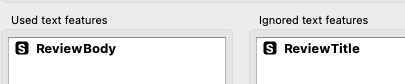
Izlaz iz Corpus šaljemo u Preprocess Text. Ovdje morate pripaziti na kanal. Naime, ako ostavite zadanu opciju Matching Docs, onda je potrebno u Corpus Viewer widget-u označiti sve retke koje želite promatrati (često ostane samo jedan odabran). Inače, možete promijeniti tako da budu odabrani svi podaci (Corpus).
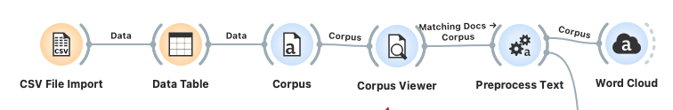
Ovdje nam Word Cloud može poslužiti za provjeru je li sve odabrano:
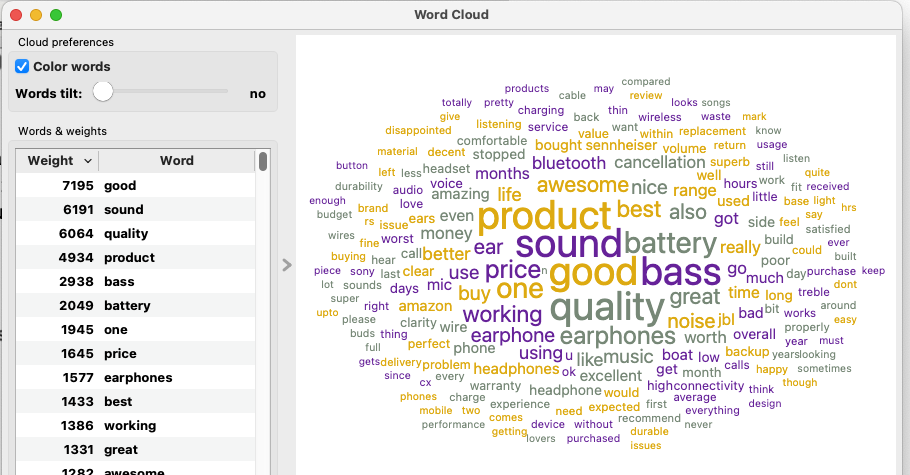
Widget Sentiment Analysis sadrži nekoliko metoda, a ovdje ćemo odabrati VADER:
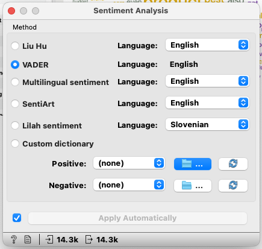
Provjerite za koje jezike je prikladna odgovarajuća metoda. Naravno, možete i sami definirati vlastite rječnike (custum dictionary).
Korelacija
Računanje korelacije je korisna statistička metoda koja nam daje informacije o povezanosti dviju varijabli. Često se koriste:
- Spearman
- Pearson
Pearson
Pearson-ova korelacija se naziva i linearna jer mjeri linearnu povezanost između dvije kontinuirane varijable. Prije računanja, potrebno je provjeriti prepostavke (eng. assumptions):
- Slučajan odabir uzorka
- Kvantitativne varijable (continuous)
- Podaci su upareni (svaka x vrijednost je povezana s y vrijednosti)
- Podaci su normalno distribuirani
- Varijable su linearno povezane
- Nema odstupajućih vrijednosti (eng. outliers)
Vrijednost koeficijenta je između -1 i 1.
Spearman
Spearman-ova korelacija mjeri monotonu povezanost između dvije varijable na temelju ranga (eng. rank). U kontekstu statistike i analize podataka, monotona veza između dvije varijable znači da se vrijednosti jedne varijable općenito povećavaju ili smanjuju s povećanjem ili smanjenjem vrijednosti druge varijable. To ne znači nužno da postoji savršena linearna veza, već samo da postoji opći trend.
Pretpostavke:
- Slučajan odabir uzorka
- Monotona povezanost među varijablama
- Podaci su upareni
- Nezavisni podaci
- Varijable su ordinalne ili kontinuirane
Prikazom podataka o ocjenama kupaca možemo odmah utvrditi da nisu normalno distribuirani tako da ne možemo primijeniti Pearson-ovu korelaciju.
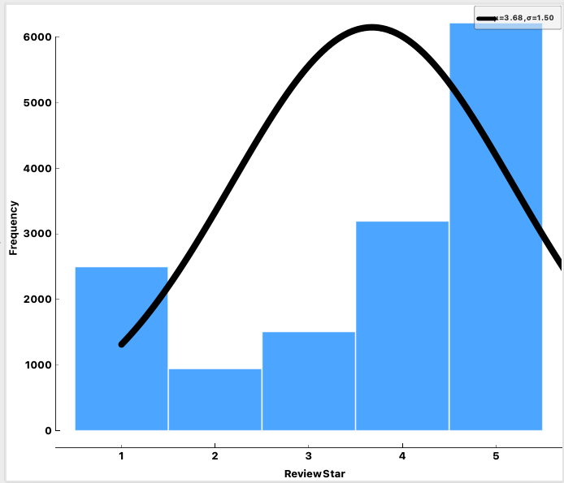
Prema tome, možemo vidjeti rezultat:
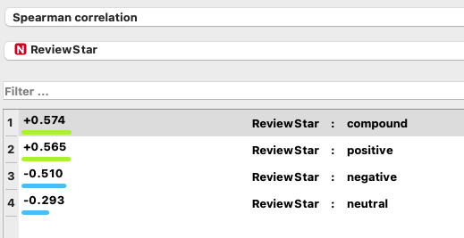
Prema tablici, postoji umjerena (eng. moderate) pozitivna korelacija između ocjene i teksta koje je klasificirano kao pozitivno, umjerena negativna između ocjene i negativnog teksta te slaba korelacija između ocjene i neutralnog mišljenja. Kad se računa korelacija, dobro je dodati i Data Table kako bi mogli provjeriti i ostale vrijednosti koje nisu vidljive u samom widget-u:
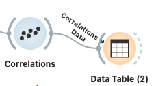
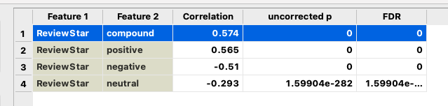
Kao izlaz iz Sentiment Analysis možemo postaviti i Heat Map te pogledati kako se mišljenja grupiraju.
U ovom dijelu smo istražili kako koristiti alat Orange za analizu teksta. Naučili smo kako:
- Učitavati tekstualne podatke: Uvezli smo različite formate datoteka i stvorili korpus (zbirku dokumenata).
- Preprocesirati tekst: Rastavili smo tekst na riječi, uklonili stop riječi i normalizirali tekst kako bismo ga pripremili za daljnju analizu.
- Vizualizirati tekst: Koristili smo Word Cloud i druge vizualizacije kako bismo dobili uvid u najčešće pojmove u tekstu.
- Provesti analizu sentimenta: Odredili smo emocionalni ton teksta koristeći različite metode i alate.
- Istraživati korelacije: Proučavali smo povezanost između ocjena proizvoda i izraženog sentimenta u recenzijama.